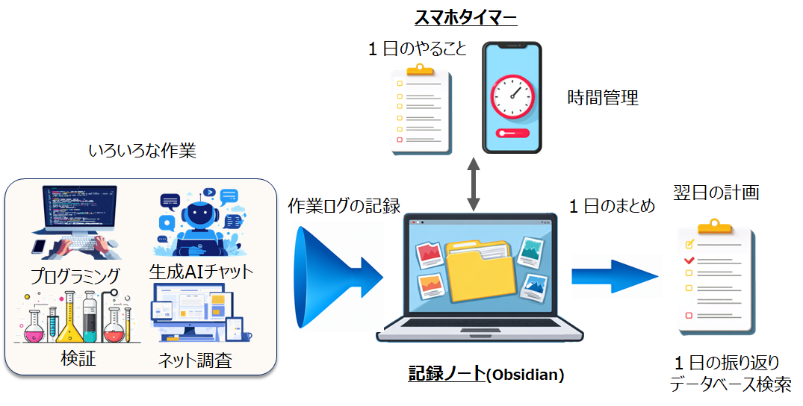
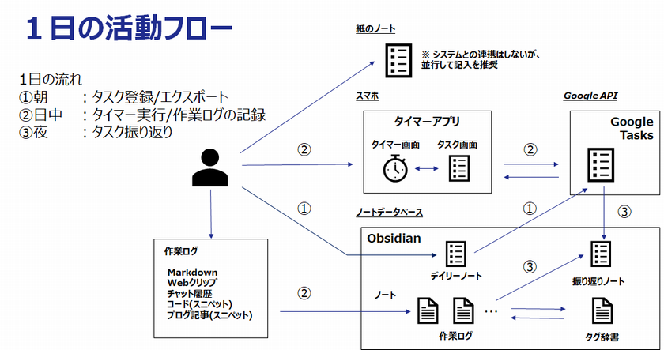

ホーム
ptune プロジェクト
概要
個人の活動を回すための記録の仕組み
ptune プロジェクトは、
1日単位で「計画・実行・振り返り」を回すための個人向けワークログ基盤です。
朝に計画を立て、
日中に作業を進め、
夜に自分で振り返る。

ptune は、この日々の流れを無理なく継続できるよう支援するツールです。
1日の流れ
ptune は「1日を回す」ことに特化したシンプルな仕組みです。
スマホと Obsidian は、必要に応じて Google Tasks を介して連携します。

朝：計画する
- 今日やることを整理する
- タスクを決める
- 必要に応じて同期する
日中：実行する
- 作業を進める
- タイマーで時間を記録する
- 必要に応じてメモを残す
夜：振り返る
- 1日の実績を確認する
- 作業内容を見返す
- 改善点を整理する（※任意で AI による要点整理）
※ AI の利用はオプションで、利用しなくても振り返りは可能です。
プロジェクト構成
本プロジェクトは、毎日の運用に必要な基本機能 ptune-task と、
より高度な記録活用を行う応用機能 ptune-log で構成されます。
ptune-task
ptune-task は、ptune プロジェクトの基本機能です。
1日の計画・実行・振り返りを安定して回すための中心となるタスク管理ツールです。
- タスクの整理と実行管理
- スマホタイマーによる作業時間の記録
- Google Tasks を使った同期
- ptune を使い始める上での基本機能
- AI はオプション扱いで、使わなくても利用可能
ptune-log
ptune-log は、作業記録をより深く活用したい利用者向けの応用機能です。
日々の運用に必須ではなく、より高度な整理・分析を行いたい場合に利用する拡張的な仕組みです。
- 作業ノートの整理／構造化
- 高度な記録の検索／分析
- エキスパート寄りの利用を想定
- 将来的な拡張を前提とした設計
※ AI 活用も含めて検討中です。
ptune-task / ptune-log 比較
| 構成 | ptune-task | ptune-log |
|---|---|---|
| 位置づけ | 基本機能 | 応用機能 |
| 必須性 | 必須 | 任意 |
| ユースケース | 日々のタスク管理 | 作業記録の整理・分析 |
| 対象 | 日次運用を安定して回したいユーザ | より高度な記録・分析を行いたいユーザ |
| 扱うデータ | タスク、実績、基本的な作業記録 | ノート、メモ、ログなど多様な記録 |
| 目的 | タスク遂行、生産性向上 | 知識の構造化 |
| プラットフォーム | Obsidian + スマホタイマー(ptune) | Obsidian + Python |
| AI利用 | 任意（要約など限定用途） | 積極的に活用 |
| 開発方針 | 安定運用重視 | 段階的検討・拡張 |
関連リンク
-
ptune（スマホアプリ）
https://github.com/getperf/ptune -
ptune-task（Obsidian プラグイン）
https://github.com/getperf/ptune-task -
ptune-log（Python パッケージ）
https://github.com/getperf/ptune-log -
PtuneSync（Windows 補助ツール）
https://github.com/getperf/PtuneSync
© 2025-2026 getperf.net